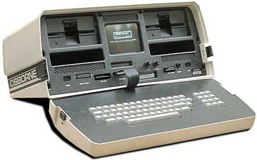
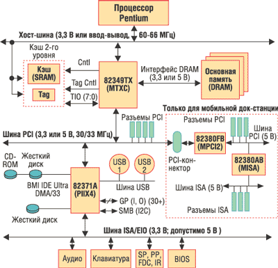
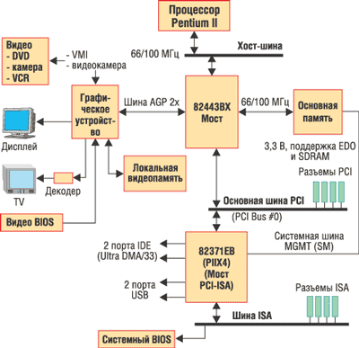
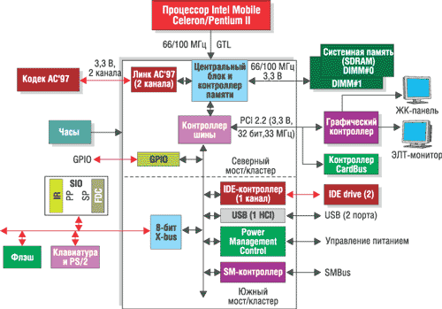
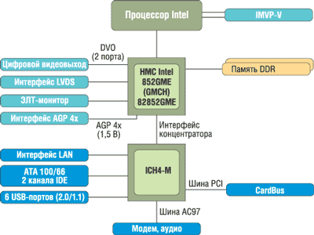

Евгений Рудометов
rudometov@mail.ru
В статье использованы открытые материалы корпорации Intel (http://www.intel.com).
Центральные процессоры - это, разумеется, ключевые элементы компьютеров. Однако реализация их потенциальных возможностей зависит от электронного окружения, представленного специализированными микросхемами и другими радиоэлементами. Эти компоненты задают необходимые рабочие режимы электропитания и передачи компьютерных данных, обеспечивают электрические и логические связи процессора с остальными частями системы, координируя их работу и стремясь обеспечить наибольшую эффективность всех компонентов. Именно поэтому такие микросхемы называют микросхемами системной логики.
Особенности НМС
Специализированные наборы микросхем (НМС), их внутренняя структура и функциональные возможности должны быть тесно увязаны с особенностями архитектуры конкретных вариантов процессоров, на работу с которыми они ориентированы. Кроме того, такие наборы, составляющие основу системных плат, создаются с учетом различных конфигураций компьютеров и возможного разнообразия решаемых задач. Использование оптимально спроектированного НМС служит залогом высокой производительности компьютера; и наоборот, неоптимальный набор микросхем окружения процессора способен снизить общую производительность и ограничить функциональные возможности всей компьютерной системы.
Именно по этой причине выпуск новых процессоров обычно сопровождается проектированием специализированного НМС. Без такого набора процессор остается просто микросхемой, бесполезным - но достаточно дорогостоящим - кусочком кремния с чрезвычайно сложной внутренней электронной структурой.
Свои специализированные НМС разрабатываются для каждого поколения процессоров. Более того, для каждого из поколений процессоров может существовать несколько вариантов НМС, в том числе и от разных производителей, отличающихся внутренней архитектурой, составом и числом микросхем, функциональными возможностями и эффективностью работы. Именно поэтому так важен детальный анализ структуры, параметров и возможностей НМС.
Развитие архитектуры НМС позволило сократить число используемых в их составе микросхем. Основу современных НМС составляют, за редким исключением, всего два компонента.
Первый компонент - микросхема, называемая северным мостом (North Bridge). Посредством встроенных в него контроллеров северный мост определяет работу основных подсистем компьютера, обеспечивая связь между процессором, модулями оперативной памяти, а с некоторых пор и видеоадаптером. В дополнение к этому данная микросхема контролирует работу подключаемых к ней карт расширения (если, конечно, это предусмотрено архитектурой НМС). Еще одна ее функция - поддержка связи со вторым компонентом (или компонентами) НМС.
Второй компонент НМС называется южным мостом (South Bridge). Эта микросхема с помощью встроенных средств и внешних элементов обеспечивает контроль за работой большого числа сравнительно медленных периферийных устройств.
Необходимо отметить, что разделение НМС на компоненты позволяет разрабатывать специализированные микросхемы, что обеспечивает за счет комбинирования компонентов эффективное решение задач.
Остается добавить, что одна из основных функций микросхем системной логики - эффективное управление ресурсами компьютеров. К этим ресурсам относятся, кстати, многочисленные шины, входящие в состав архитектуры компьютерной системы, и потоки передаваемой с их помощью информации. В мобильных системах НМС играют также активную роль в управлении и экономии энергоресурсов, представленных автономными источниками питания.
Первые мобильные ПК
В ходе своей эволюции персональные компьютеры до некоторого момента были представлены исключительно настольными вариантами с соответствующими системными платами. Но развитие полупроводниковых и компьютерных технологий позволило повысить степень интеграции комплектующих, и в результате удалось создать компактные системы, постепенно приобретающие черты мобильных устройств.
На начальном этапе относительно портативные компьютеры выполнялись в виде небольших чемоданчиков или портфелей. По мере совершенствования архитектур и технологий удалось довести габариты компьютеров, предназначенных для мобильного использования, до размеров книг и блокнотов (правда, пока довольно больших). В соответствии с размерами их называли лэптопами (laptop) либо ноутбуками (notebook). Эти мобильные компьютеры во многом унаследовали архитектуру своих настольных прототипов, включая микросхемы системной логики.
Говоря о развитии архитектуры компьютеров, необходимо отметить, что мобильные компьютеры появились еще до появления чипсетов в современном понимании, даже в многокомпонентном варианте с реализацией основных функций в виде отдельных микросхем. Вообще говоря, концепция мобильного компьютера была разработана Аланом Кеем в 1968 г. Некоторые ее положения были реализованы в компьютере для NASA массой 12 кг в 1979 г. Однако автономные модели были созданы существенно позже.
Одной из первых мобильных разработок стал компьютер Osborne 1 (рис. 1), созданный в 1981 г. на основе процессора Z80 без НМС в современном понимании. В архитектуре этого компьютера не было даже жестких дисков, но были накопители на гибких дисках формата 5,25 дюйма. Кроме того, в конструкции был представлен и миниатюрный дисплей на основе электронно-лучевой трубки.
|  | Рис. 1. Компьютер Osborne 1. |
В дальнейшем свои мобильные решения предложили такие известные фирмы, как IBM, Toshiba, Compaq, Apple и другие. Некоторые ранние модели были основаны на процессорах архитектуры Intel с поддержкой их работы соответствующими микросхемами.
Предыстория НМС
Рассматривая эволюцию НМС мобильных систем, необходимо отметить, что корпорация Intel выступает как основной производитель НМС не только для этого сегмента рынка, но и для сегмента настольных систем, с которых и началась эра специализированных микросхем. И лидерство Intel здесь бесспорно, хотя это дается ей нелегко.
Однако так было далеко не всегда. Более того, до некоторого момента Intel вообще не имела своих решений, и настольные компьютеры собирались на основе специализированных наборов от других фирм.
Считается, что первый НМС, названный 82С206, предложила фирма Chips and Technologies в 1986 г. Конечно, этот набор не был еще "мобильным", более того, он совсем не походил на те комплекты микросхем, которые используются сегодня, однако простейшие функции координации компьютерных подсистем он выполнял.
НМС 82С206 состоял из пяти микросхем, одной основной и четырех вспомогательных. Он уже содержал контроллер шин, генератор тактовой частоты, системный таймер, контроллер прерываний и т. п. Как следует из названия, этот НМС был ориентирован на процессоры класса Intel 286 (i286). Вскоре этот набор был усовершенствован и получил наименование New Enhanced AT. А потом появились более совершенные наборы для Intel 386 (i386), Intel 486 (i486) и т. д., эволюция которых привела к современным мобильным устройствам.
В процессе совершенствования компьютерной архитектуры идея разработки и выпуска специализированных НМС вслед за пионером чипсетостроения - фирмой Chips and Technologies была подхвачена такими компаниями, как Suntac, Opti, VLSI, UMC и т. д. Некоторые изделия данных фирм стали основой первых моделей мобильных компьютеров, созданных на основе процессоров i286 и i386, с массой, нередко заметно превышавшей 5 кг.
В 1994 г. на рынке НМС активно заявила о себе компания Intel со своими изделиями, которые позволили ей уже через год стать доминирующим производителем НМС, правда, сначала для настольных систем. Однако, используя свой опыт, эта компания не упустила свой шанс и с мобильными компьютерами в период начала их массового выпуска, создав ряд удачных мобильных НМС. Дальнейшие разработки Intel позволили ей закрепить свой успех и практически вытеснить конкурентов из этого сегмента рынка, агрессивно захватив и удерживая в последующие годы более 80% объема продаж мобильных НМС.
От настольных к мобильным
Первым специализированным НМС от Intel считается i82350, поддерживающий шину EISA и созданный для процессоров класса i386DX и i486. Однако он не имел особого успеха, поскольку данная шина не получила распространения. Тем не менее попытки выпуска настольных и переносных компьютеров, в архитектуре которых использовалась данная шина, все-таки были предприняты. Однако такие системы не стали массовыми даже на рынке настольных решений, что отразилось на судьбе и самого НМС 82350.
Следующими наборами микросхем системной логики, созданными под i486, стали НМС i420TX (1992 г.), i420EX и i420ZX (оба 1994 г.). Хотя они и были более удачными, но их трудно было назвать НМС для мобильных устройств из-за особенностей их архитектуры, функций и эксплуатации. Однако, строго говоря, мобильными в то время считались любые относительно компактные компьютеры с автономными источниками питания. Что же касается их архитектуры, то обычно за основу брали известные решения с комплектующими для настольных компьютеров. В результате так называемые мобильные устройства были довольно тяжелыми. Однако даже первые, сравнительно несовершенные и не очень мобильные изделия были достаточно популярны, поскольку масса 5-10 кг тогда не считалась чрезмерной и не слишком отпугивала пользователей.
По сути, прорыв произошел только после появления процессоров Intel Pentium. В ряде наборов, ориентированных на процессоры данного класса, появился наконец-то НМС, анонсированный как мобильный, - i430MX (1995 г.). Основой его послужил, как и следовало ожидать, настольный вариант i430FX: процессор P75+, оперативная память - модули FPM/EDO с максимальным объемом 128 Мбайт при кэшировании только 64 Мбайт. По сути, отличие мобильного варианта от настольного заключалось в южном мосте: в настольном варианте использовалась микросхема PIIX, а в мобильном - более совершенная и компактная MPIIX.
Но по-настоящему популярным стал только НМС i430TX (структура компьютера на его основе показана на рис. 2). Дело в том, что именно в этот набор его создатели даже в настольном варианте добавили поддержку ряда важных технологий. Среди них отметим технологию MMX, повышающую эффективность обработки потоковых данных (одна команда и много данных) и ориентированную на мультимедийные приложения. Кроме того, в i430TX был реализован один из первых стандартов энергосбережения, получивший наименование DPMA (Dynamic Power Management Architecture). Благодаря основанным на DPMA технологиям этот НМС можно было использовать как в настольных, так и в мобильных компьютерах. Результатом стало пониженное энергопотребление, а следовательно, и увеличение времени работы системы от автономного источника питания.
|  |
| Рис. 2. Структура компьютера на базе НМС i430TX.
|
В дополнение к перечисленным достоинствам следует упомянуть возможность использования модулей оперативной памяти FPM/EDO/SDRAM, протокола Ultra DMA/33 для накопителей, параллельного интерфейса подключения карт расширения PCI 2.1 (параллельные операции PCI), последовательного интерфейса USB со скоростью передачи данных до 12 Мбит/с и другие функции. Остается добавить, что реализация технологии ACPI (Advanced Configuration and Power Interface) сделала возможным быстрое включение компьютера и переход системы в режим пониженного энергопотребления при отсутствии активности пользователя или модулей ПО. Все это способствовало популярности набора микросхем i430TX как в настольных, так и в мобильных решениях.
При всех достоинствах данного НМС компания Intel не ограничилась настольным решением и специально объявила и выпустила мобильный вариант, который, по сути, представлял собой тот же НМС i430TX. По замыслу разработчиков, этот шаг должен был стимулировать производство мобильных систем.
В дальнейшем производители мобильных решений не прекращали попытки использовать НМС, предназначавшиеся для настольных решений, тем более что этому способствовала и сама Intel, выпуская НМС, которые могли применяться как в настольных, так и в мобильных решениях.
Примером может послужить i440BX, созданный для процессоров Intel Pentium II (рис. 3). Этот НМС стал вторым после i440LX набором двойного применения, поддерживающим видеоподсистему AGP (до этого видеоподсистемы строились исключительно на основе шины PCI). Новый же стандарт не только освободил шину PCI от возросших потоков данных, но и обеспечил прирост производительности для графики. Кстати, это обстоятельство нашло отражение и в самом наименовании НМС - Intel 440BX AGPset.
|  |
| Рис. 3. Структура компьютера на базе НМС i440BX.
|
Что касается других существенных преимуществ, то i440BX стал первым НМС, где тактовая частота была поднята до 100 МГц. Это, конечно же, обеспечило адекватный рост производительности компьютерной системы. Остается добавить, что НМС i440BX поддерживал технологию QPA (Quard Port Acceleration), обеспечивающую параллельность внутренних операций работы за счет реализации четырехпортового арбитража шины процессора, графической шины AGP, шины PCI и шины памяти. Кроме того, данный НМС официально поддерживал память EDO/SDRAM объемом до 512 Мбайт (1 Гбайт в случае регистровой памяти), протокол Ultra DMA/66, интерфейс USB, а также ACPI как для настольных, так и для мобильных вариантов.
Вскоре был объявлен и мобильный вариант i440BX. Впрочем, это был исключительно маркетинговый ход, поскольку мобильный НМС фактически представлял собой клон настольного прототипа.
В дальнейшем были созданы упрощенные варианты, получившие наименование i440ZX, с поддержкой тактовой частоты 66 и 100 МГц, на базе которых создавались и настольные, и мобильные системы.
Рассматривая эволюцию НМС от Intel, следует обратить внимание, что при реализации мобильных решений нередко использовались настольные варианты, даже если анонсировались и мобильные. Как правило, это делалось по экономическим соображениям. Однако было бы ошибкой считать, что все мобильные НМС того времени были исключительно клонами настольных аналогов. В качестве примера отдельной разработки, не копирующей настольный прототип, можно привести НМС i440MX (рис. 4). Этот вариант, созданный на основе i440BX, представлял собой одночиповый НМС, ориентированный исключительно на мобильный рынок.
|  |
| Рис. 4. Структура компьютера на базе НМС i440MX.
|
НМС i440MX был ориентирован на поддержку мобильных процессоров Intel Celeron с архитектурой ядра P6, как и у процессоров Intel Pentium II и Pentium III. Как было объявлено, основой внутренней структуры i440MX послужили микросхемы северного и южного моста НМС i440BX с сохранением в новой разработке всех функций его прототипа. Исключением послужила видеоподсистема, которая в новом наборе была представлена решениями на основе PCI (в прототипе основой видеоподсистемы служил порт AGP). Было создано два варианта: i440MX и i440MX-100, отличающихся тактовой частотой шины памяти.
Остается добавить, что у i440MX одночипового аналога среди настольных решений не было. Это выгодно отличало мобильный вариант от прототипа и позволяло существенно снизить общую цену системы.
Подчеркнем, что с момента появления i440MX линии НМС для настольных и мобильных систем стали расходиться все чаще и чаще - в соответствии с требованиями процессоров, ориентированных на разные сегменты рынка и проектируемых по-разному. Это было связано в первую очередь с тем, что цели, стоящие перед разработчиками настольных и мобильных систем, постепенно стали меняться. Если для настольных решений главным оставалась производительность, то для мобильных компьютеров на первое место стали выходить параметры, связанные с эксплуатацией, прежде всего масса и экономичность энергопитания. Действительно, именно масса в значительной степени определяет портативность, а энергоэкономичность системы наряду с емкостью аккумулятора - время автономной работы мобильного устройства. Именно поэтому мобильные процессоры стали проектировать с расчетом на пониженное электропитание, а функции поддержки ложились на соответствующие НМС.
Одним из таких НМС стал i815EM, поддерживающий тактовую частоту процессорной шины до 100 МГц и ориентированный на мобильные варианты процессоров - Intel Pentium III-M и мобильный Intel Celeron. НМС i815EM получил широкое распространение для систем на основе данных процессоров. Созданный на отлаженной базе технологий i440BX, он обладал и рядом характеристик нового поколения, прежде всего встроенными видеосредствами. Набор микросхем i815EM позволял установить дополнительно 4 Мбайт дисплейной кэш-памяти либо использовать внешний графический контроллер AGP 4x для повышения качества видеоизображений и ускорения вывода трехмерной графики.
НМС i815EM состоял из двух микросхем, названных разработчиками хабами (контроллерами-концентраторами). Первая из них - традиционная, типовая составляющая, которая реализует связь с процессором, подсистемой оперативной памяти, видеоподсистемой и вторым компонентом.
Второй компонент данного НМС отвечает за ввод-вывод. Она носит название ICH2-M, имеет встроенные функции LAN и четыре порта USB, контроллер AC'97 (поддерживает полностью объемный шестиканальный звук и работу программ, реализующих функции модема) и т. д. Кроме того, микросхема ICH2-M, созданная для мобильных систем, поддерживает технологию Intel SpeedStep. Эта технология автоматически переключает процессор между двумя основными тактовыми частотами в зависимости от нагрузки на него, оптимизируя время работы от батарей и производительность приложений. Intel SpeedStep обеспечивает повышенное время работы в автономном режиме от внутреннего источника питания мобильного компьютера. Заметим, что в дальнейшем технология Intel SpeedStep неоднократно подвергалась усовершенствованию.
Следующим мобильным НМС стал i830. Созданный на основе своего предшественника - i815EM, он ориентирован на системы с мобильными Intel Pentium III-M и Intel Celeron. Этот НМС имеет тактовую частоту шины процессора до 133 МГц и поддерживает модули памяти PC133 SDRAM.
Здесь следует напомнить, что к тому времени мобильные процессоры успешно перешли от ножевого разъема (SECC) к стандартному, так называемому сокетному (Socket). Процессоры выпускались в корпусах двух типов - Micro FCPGA (Flip Chip Pin Grid Array) и Micro FCBGA (Flip Chip Ball Grid Array), подходящих даже для самых маленьких субноутбуков и планшетных ПК. Для этих устройств были выпущены модели с низким и сверхнизким энергопотреблением, достигнутым за счет пониженного напряжения питания (LV - Low Voltage и ULV - Ultra Low Voltage) и уменьшенной частоты работы ядра. В результате процессор Intel Pentium III-M (866 МГц/533 МГц) при работе от батарей потреблял менее 1 Вт, а модель процессора со сверхнизким напряжением питания (700 МГц/350 МГц) - 0,5 Вт. Такие уровни энергопотребления позволяют создавать мини- и субноутбуки с временем автономной работы более 7 ч. Однако широкие функциональные возможности и стандартных, и экономичных вариантов Intel Pentium III-M требуют соответствующего окружения. В качестве центрального элемента микросхемной поддержки процессора выступил именно НМС i830.
Для i830 существует три версии реализации контроллера памяти. Первая модификация - это набор микросхем i830MP, поддерживающий внешний графический адаптер AGP 2x/4x. Вторая - это НМС i830M со встроенным графическим контроллером; эта модификация позволяет применять и внешний графический адаптер. Наконец, третья модификация - это i830MG со встроенной недорогой графической подсистемой для сегмента бюджетных решений рынка мобильных компьютеров.
Из ключевых особенностей i830 следует отметить поддержку памяти до 1 Гбайт, шести портов USB и улучшенные по сравнению с предшественниками режимы энергосбережения, что позволяет еще больше увеличить время работы мобильных систем от встроенного источника питания.
Подводя итоги анализа возможностей мобильных НМС семейства i830, следует отметить, что развитие данной архитектуры получило свое логическое продолжение в семействе i845.
НМС для процессоров Pentium 4
В семейство мобильных наборов микросхем i845 входят два варианта: i845MP, созданный для высокопроизводительных систем, и i845MZ для систем начального уровня. Оба НМС разработаны, протестированы и оптимизированы для работы с мобильным процессором новой для мобильных систем архитектуры. Эта архитектура, известная из настольных решений как NetBurst, сменила предыдущее поколение P6, в мобильном секторе завершившее свое развитие в моделях Intel Pentium III-M и Intel Celeron. Следующие модели мобильных процессоров, по аналогии с настольными вариантами, получили наименование Intel Pentium 4-M.
Семейство НМС i845MP/i845MZ (контроллер-концентратор памяти 82845MP/82845MZ) поддерживает внешнее графическое решение AGP 4x и процессорную шину, унаследованную от настольного прототипа. Для мобильных решений, созданных на основе данных вариантов НМС, шина FSB типа QPB (Quad-Pumped Bus) работает на тактовой частоте 100 МГц. Как известно, такая шина при частоте 100 МГц передает данные с частотой 400 МГц (для адресной части - 200 МГц), что обеспечивает пиковую пропускную способность до 3,2 Гбайт/с.
Кроме того, НМС i845MP поддерживает модули оперативной памяти типа DDR200 и DDR266 SDRAM общим объемом до 1 Гбайт, а i845MZ - только DDR200 SDRAM общим объемом до 512 Гбайт.
Говоря о возможностях подсистемы памяти, следует напомнить, что память DDR SDRAM (Double Data Rate SDRAM) - это память SDRAM, обеспечивающая передачу данных по передним и задним фронтам тактовых импульсов шины памяти, т. е. она работает фактически на удвоенной тактовой частоте. Это означает, что память DDR200 и DDR266 обладает удвоенной полосой пропускания по сравнению с ранее используемым типом SDR SDRAM (Single Data Rate SDRAM, или просто SDRAM), представленным в мобильных системах предыдущего поколения модулями PC100 и PC133 SDRAM. Использование в мобильных системах нового типа памяти обеспечило существенный рост производительности.
Семейство НМС i845MP/i845MZ также поддерживает усовершенствованную технологию Intel SpeedStep, режимы пониженного энергопотребления Deep и Deeper Sleep, обеспечивающие надежный переход между различными состояниями энергопотребления.
Усовершенствованная технология Intel SpeedStep динамически изменяет тактовую частоту и напряжение питания процессора в зависимости от требуемой вычислительной мощности. Например, потребляемая мощность процессора Intel Pentium 4-M в среднем составляет 2 Вт благодаря тому, что напряжение питания процессора снижается до величины менее 1 В (например, в периоды между ударами по клавиатуре). Однако когда необходима максимальная производительность, напряжение питания ядра повышается до 1,3 В. Такое динамическое переключение делителя тактовых частот шин, напряжения питания ядра и тактовой частоты ядра значительно увеличивает время работы от батарей.
Еще один подход, применяемый в мобильных элементах и системах на основе соответствующих НМС, - это специальные средства управления энергопотреблением, например, технология Deeper Sleep. В состоянии Deeper Sleep напряжение питания процессора снижается до наименьшего возможного уровня, при котором не происходит потери данных. Очевидно, что в данном режиме расход энергии батарей существенно сокращается.
Все эти модификации режимов оптимального управления энергопотреблением позволяют сочетать высокую производительность со сравнительно длительным сроком автономной работы.
Что же касается возможностей управления устройствами ввода-вывода, то они определяются вторым компонентом НМС i845, в базовом комплекте которого используется ICH3-M, что обеспечивает совместимость с Ultra ATA/100, PCI, LAN, USB, AC'97 2.2 и т. п.
Улучшенный вариант i845 - НМС семейства i852, оптимизированные для моделей мобильного процессора Intel Pentium 4-M. Это семейство представлено вариантами i852GME, i852GM, i852PM.
Первый, самый мощный вариант НМС имеет встроенные графические средства и работает с внешним видеоадаптером AGP 4x. Он также поддерживает процессорную шину с частотой передачи данных 533 и 400 МГц и модули оперативной памяти типа DDR333/266 объемом до 2 Гбайт. Структура компьютера на базе такого НМС приведена на рис. 5.
|  |
| Рис. 5. Структура компьютера на базе НМС i852GME.
|
Второй вариант, i852GM, имеет встроенные графические средства и не предусматривает внешнего видеоадаптера. Он поддерживает процессорную шину с частотой 400 МГц и память типа DDR200/266 объемом до 1 Гбайт.
Третий вариант, i852PM, не имеет встроенных графических средств, но совместим с внешним видеоадаптером AGP 4x. Он поддерживает процессорную шину с частотой 533 и 400 МГц и память типа DDR333/266 объемом до 2 Гбайт.
Все варианты НМС i852 поддерживают шесть портов USB, Ultra DMA/100 и т. п., а также технологии энергосбережения. Так, Enhanced Intel SpeedStep представляет собой технологию изменения напряжения питания и частоты процессора, охватывающую режимы от уровня максимальной производительности до режима экономии энергии для продления работы аккумуляторов. Кроме того, поддерживается состояние ожидания Deeper Sleep Alert - режим динамического управления электропитанием функционирует при меньшем напряжении питания, чем режим Deep Sleep. Все это увеличивает срок службы батарей и соответственно повышает уровень мобильности портативных систем.
***
Несмотря на всю эффективность решений, созданных на основе Intel Pentium 4-M и НМС семейства i852, специалисты Intel продолжили работу над совершенствованием архитектуры важнейших компьютерных компонентов. Эти усилия нашли воплощение в мобильных моделях процессоров новой архитектуры, а также в соответствующих мобильных НМС. Но об этом в следующей части статьи.